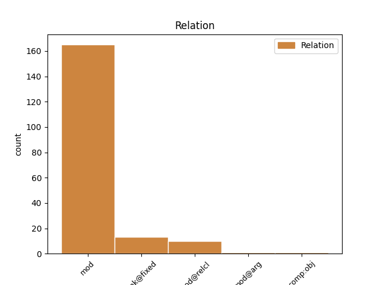
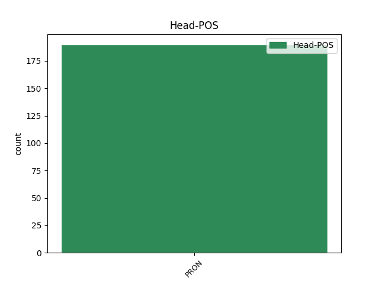
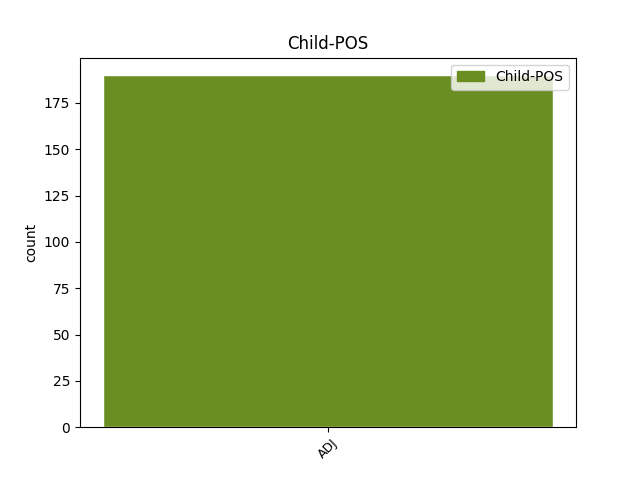

Distribution of features within this leaf



Agreement Rules sorted by frequency.
When the head token is PRON and the dependent token is ADJ.
1 Jednakże _ _ _ _ 0 _ _ _
2 nasze _ _ _ _ 0 _ _ _
3 wartości _ _ _ _ 0 _ _ _
4 i _ _ _ _ 0 _ _ _
5 szacunek _ _ _ _ 0 _ _ _
6 dla _ _ _ _ 0 _ _ _
7 samych sam ADJ adj:pl:gen:m1:pos Animacy=Hum|Case=Gen|Degree=Pos|Gender=Masc|Number=Plur 8 mod _ _
8 siebie siebie PRON siebie:gen Case=Gen|PronType=Prs|Reflex=Yes 0 _ _ _
9 , _ _ _ _ 0 _ _ _
10 nie _ _ _ _ 0 _ _ _
11 pozwoli _ _ _ _ 0 _ _ _
12 nam _ _ _ _ 0 _ _ _
13 odstąpić _ _ _ _ 0 _ _ _
14 od _ _ _ _ 0 _ _ _
15 naszych _ _ _ _ 0 _ _ _
16 zasad _ _ _ _ 0 _ _ _
17 . _ _ _ _ 0 _ _ _
Disagree Examples:
1 Nim _ _ _ _ 0 _ _ _
2 Marcin _ _ _ _ 0 _ _ _
3 odejdzie _ _ _ _ 0 _ _ _
4 , _ _ _ _ 0 _ _ _
5 dzieje _ _ _ _ 0 _ _ _
6 się _ _ _ _ 0 _ _ _
7 coś coś PRON subst:sg:nom:n:ncol Case=Nom|Gender=Neut|Number=Sing|PronType=Ind 0 _ _ _
8 dziwnego dziwny ADJ adj:sg:gen:n:pos Case=Gen|Degree=Pos|Gender=Neut|Number=Sing 7 mod _ SpaceAfter=No
9 . _ _ _ _ 0 _ _ _
1 A _ _ _ _ 0 _ _ _
2 może _ _ _ _ 0 _ _ _
3 chodzi _ _ _ _ 0 _ _ _
4 o _ _ _ _ 0 _ _ _
5 coś coś PRON subst:sg:acc:n:ncol Case=Acc|Gender=Neut|Number=Sing|PronType=Ind 0 _ _ _
6 innego inny ADJ adj:sg:gen:n:pos Case=Gen|Degree=Pos|Gender=Neut|Number=Sing 5 mod _ SpaceAfter=No
7 ? _ _ _ _ 0 _ _ _
1 Czy _ _ _ _ 0 _ _ _
2 komornik _ _ _ _ 0 _ _ _
3 będzie _ _ _ _ 0 _ _ _
4 chciał _ _ _ _ 0 _ _ _
5 zająć _ _ _ _ 0 _ _ _
6 jeszcze _ _ _ _ 0 _ _ _
7 coś coś PRON subst:sg:acc:n:ncol Case=Acc|Gender=Neut|Number=Sing|PronType=Ind 0 _ _ _
8 innego inny ADJ adj:sg:gen:n:pos Case=Gen|Degree=Pos|Gender=Neut|Number=Sing 7 mod _ SpaceAfter=No
9 ? _ _ _ _ 0 _ _ _
1 Jej _ _ _ _ 0 _ _ _
2 zdaniem _ _ _ _ 0 _ _ _
3 coś coś PRON subst:sg:nom:n:ncol Case=Nom|Gender=Neut|Number=Sing|PronType=Ind 0 _ _ _
4 złego zły ADJ adj:sg:gen:n:pos Case=Gen|Degree=Pos|Gender=Neut|Number=Sing 3 mod _ _
5 wydarzyło _ _ _ _ 0 _ _ _
6 się _ _ _ _ 0 _ _ _
7 w _ _ _ _ 0 _ _ _
8 mieszkaniu _ _ _ _ 0 _ _ _
9 przy _ _ _ _ 0 _ _ _
10 ul _ _ _ _ 0 _ _ _
11 . _ _ _ _ 0 _ _ _
12 Składowej _ _ _ _ 0 _ _ _
13 , _ _ _ _ 0 _ _ _
14 w _ _ _ _ 0 _ _ _
15 którym _ _ _ _ 0 _ _ _
16 wraz _ _ _ _ 0 _ _ _
17 z _ _ _ _ 0 _ _ _
18 siostrą _ _ _ _ 0 _ _ _
19 mieszkała _ _ _ _ 0 _ _ _
20 jej _ _ _ _ 0 _ _ _
21 koleżanka _ _ _ _ 0 _ _ _
22 . _ _ _ _ 0 _ _ _
1 A _ _ _ _ 0 _ _ _
2 więc _ _ _ _ 0 _ _ _
3 najpierw _ _ _ _ 0 _ _ _
4 odrzuć _ _ _ _ 0 _ _ _
5 wszystko wszystko PRON subst:sg:acc:n:ncol Case=Acc|Gender=Neut|Number=Sing|PronType=Tot 0 _ _ _
6 co _ _ _ _ 0 _ _ _
7 egzotyczne egzotyczny ADJ adj:sg:nom:n:pos Case=Nom|Degree=Pos|Gender=Neut|Number=Sing 5 mod@relcl _ SpaceAfter=No
8 , _ _ _ _ 0 _ _ _
9 gdyż _ _ _ _ 0 _ _ _
10 zdaniem _ _ _ _ 0 _ _ _
11 Gagulki _ _ _ _ 0 _ _ _
12 restauracja _ _ _ _ 0 _ _ _
13 nie _ _ _ _ 0 _ _ _
14 jest _ _ _ _ 0 _ _ _
15 miejscem _ _ _ _ 0 _ _ _
16 dla _ _ _ _ 0 _ _ _
17 dowcipów _ _ _ _ 0 _ _ _
18 : _ _ _ _ 0 _ _ _
19 surowe _ _ _ _ 0 _ _ _
20 ryby _ _ _ _ 0 _ _ _
21 japońskie _ _ _ _ 0 _ _ _
22 , _ _ _ _ 0 _ _ _
23 azjatyckie _ _ _ _ 0 _ _ _
24 igranie _ _ _ _ 0 _ _ _
25 z _ _ _ _ 0 _ _ _
26 ogniem _ _ _ _ 0 _ _ _
27 na _ _ _ _ 0 _ _ _
28 podniebieniu _ _ _ _ 0 _ _ _
29 , _ _ _ _ 0 _ _ _
30 chińskie _ _ _ _ 0 _ _ _
31 , _ _ _ _ 0 _ _ _
32 pod _ _ _ _ 0 _ _ _
33 przykrywką _ _ _ _ 0 _ _ _
34 wegetarianizmu _ _ _ _ 0 _ _ _
35 , _ _ _ _ 0 _ _ _
36 pływanie _ _ _ _ 0 _ _ _
37 w _ _ _ _ 0 _ _ _
38 tłuszczu _ _ _ _ 0 _ _ _
39 i _ _ _ _ 0 _ _ _
40 pozostałe _ _ _ _ 0 _ _ _
41 dotłuszczania _ _ _ _ 0 _ _ _
42 , _ _ _ _ 0 _ _ _
43 dosalania _ _ _ _ 0 _ _ _
44 , _ _ _ _ 0 _ _ _
45 dopieprzania _ _ _ _ 0 _ _ _
46 i _ _ _ _ 0 _ _ _
47 dosładzania _ _ _ _ 0 _ _ _
48 w _ _ _ _ 0 _ _ _
49 wydaniach _ _ _ _ 0 _ _ _
50 francuskich _ _ _ _ 0 _ _ _
51 , _ _ _ _ 0 _ _ _
52 włoskich _ _ _ _ 0 _ _ _
53 , _ _ _ _ 0 _ _ _
54 hiszpańskich _ _ _ _ 0 _ _ _
55 oraz _ _ _ _ 0 _ _ _
56 wszystkie _ _ _ _ 0 _ _ _
57 inne _ _ _ _ 0 _ _ _
58 nadużycia _ _ _ _ 0 _ _ _
59 narodowych _ _ _ _ 0 _ _ _
60 flag _ _ _ _ 0 _ _ _
61 nie _ _ _ _ 0 _ _ _
62 robią _ _ _ _ 0 _ _ _
63 na _ _ _ _ 0 _ _ _
64 niej _ _ _ _ 0 _ _ _
65 wrażenia _ _ _ _ 0 _ _ _
66 . _ _ _ _ 0 _ _ _